NFL Wide Receivers: When Are They Good?
Abstract
An “elite” season for an NFL wide receiver may be defined as having either 1000+ receiving yards or 100+ receptions. When selecting players in a draft (real or fantasy) it’s a high concern of the team when or whether a WR prospect will have an elite season. In this report, it’s found that the biggest determinants of a WR’s likelihood of having elite production are their draft position (in the actual real-life NFL draft) and the number of years they’ve played in the NFL, these two predictors can be used to model the probabilities for an elite season. Generally, higher draft picks have higher odds of having elite seasons, and such seasons occur earlier in their careers. Lower draft picks have substantially lower odds of an elite season, and most likely occur later in their careers than high draft picks.
Introduction
NFL wide receivers are not just judged for being good at running fast and catching balls, but also for how their careers progress. Some have exceedingly higher expectations than others. A first-round WR may be expected to perform at a high level almost immediately, whereas a 7th round pick may not be expected to even make the final 53-man roster. Is this discrepancy expectations warranted? Intuitively, it makes sense that higher draft picks be better wide receivers than their lower draft pick counterparts. NFL scouts and general managers are not nearly as simple-minded as the general football fandom would have us believe. However, it’s hard not to point out their blunders evidenced by outliers at either end of the draft: the obscenely hyped-up first-round bust, and the come-from-nowhere late-round gem. These are the instances that have many football viewers believe the front offices of NFL teams have absolutely no clue what their actually doing and just flipping a coin on every pick. To some degree that critique is correct. Every pick has the possibility of being really good, really bad, or average. The goal then becomes determining what that possibility actually is.
One thing is abundantly clear, good college WRs get drafted earlier. It remains to be seen if they’ll be good a year or more after getting drafted, but for the most part that’s where you’ll find all the best wideouts. The issue is general managers and fans don’t want just a good receiver, they want an elite receiver. The kind of guys that walk up to the line of scrimmage and force the defensive coordinator to put two corners directly on them to force any other receiver/running back/tight end to make a play. True menaces whose game-winning grabs haunt DBs for the rest of their lives. That’s who teams want to pick, and they have all of 262 chances to find them.
There are just far too many variables and randomness at play in football to ever be able to make an accurate prediction about any given season, game, play, player, score, etc. A WR might be incredible in college, end up in the pros and completely fall off the map. This could be due to having a great college quarterback giving them easy catches, a genius coach that schemes them open, poor competition they can just run right passed, no other options on their own team so they get all the targets, and so on. So many confounding variables within and outside a team make it nearly impossible to pinpoint whether or not a WR will eventually have a good NFL season.
The only guaranteed fully-independent pieces of information we have on any player in a given season are their draft pick, age, and years of professional experience. The goal of this analysis is to find out exactly what chances a WR has of having an elite season given those variables and the perspective of a fan without much data or a fully staffed analytics team.
What Actually Matters?
For the first part of this analysis we need to determine if age, career experience, or draft position even matter with respect to elite WR production. It’s entirely possible none of them matter at all and we can just stop here and find a movie to watch or something.
Before we can do that we need to gather a few things. First, all stats and information will be collected from the nflreadr package in R. From there, we’ll grab information and stats from WRs over the past 20 yearrs (2006-2025), and clean up the data so that we have age, draft pick, receiving yards, etc. For the sake of simplifying the analysis undrafted WRs will NOT be included. Yes, there are many undrafted WRs who go on to have exceptional careers, but with no draft numbers they’d all need to be assigned dummy values, and because there’s so many of them they’ll skew the data. The end result is a data frame with every drafted receiver for each season from 2006 to 2025 with their age, number of years in the NFL, draft pick, and draft round.
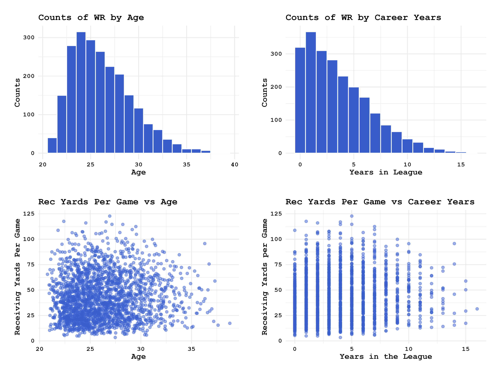
Once we have all our players and stats, they’re separated into groups: elite and non-elite. We’re assigning “elite” to any receiver that has 1000+ receiving yards or 100+ catches in a given season. Those two marks are frequently used in NFL discourse for describing the highest level of play for wide receivers, which is why we’ll use them as the threshold between the two groups. All other WRs are considered non-elite for the given season. We’ll visualize how many elite receivers are in each age group, how many years of NFL experience they have, and where they fall in the draft.
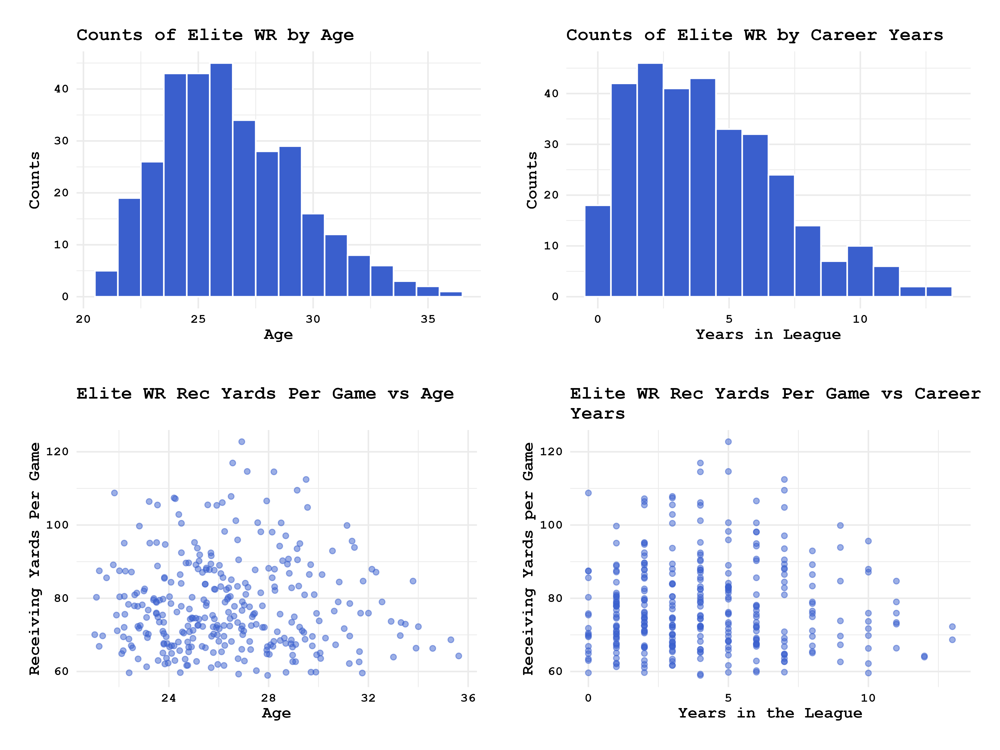
It’s hard to see exactly how the distributions of elite WRs compare to non-elite, so next they’ll be directly compared against each other.
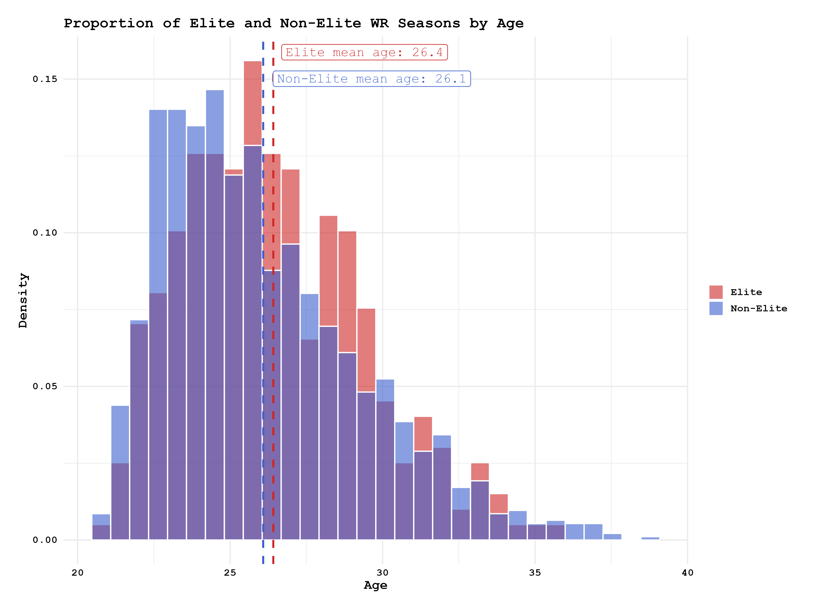
There are far more non-elite receivers than there are elite, so this histogram is showing the proportion of each age within the two groups so that they can be compared at the same scale. Mean age of elite receivers is 26.4 and mean age of non-elite receivers is 26.1. Elite WRs are slightly older but by an extremely small margin. Testing difference between the means with a Welch’s T-test gives the following results: t-statistic = 1.7881, degrees of freedom = 497.11, and p-value = .0743. At the p < .05 level, this would fail to reject the null hypothesis that there is no difference between mean ages of elite and non-elite WRs, which makes sense looking at the graph. The two groups have slightly separate peak ages, but not nearly enough to appear particularly substantial.
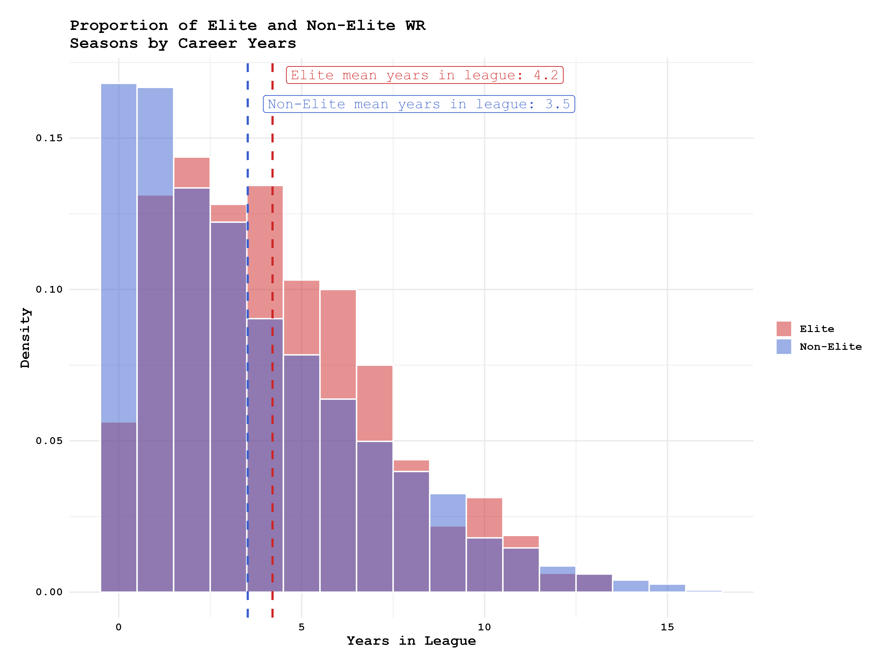
When comparing league experience there’s a slightly larger gap between the means and distributions of the two groups. The elite distribution looks like a normal Bayesian distribution, while the non-elite peaks at 0-1 years of experience in the NFL then parabolically decreases. A Welch’s T-test gives results: t-statistic = 3.779, degrees of freedom = 501.6, and p-value = .0001. This is an extremely significant difference in means at the p < .05, rejecting the null hypothesis. This variable will be used later for making regression models. Finally, we’ll do the same comparison of mean draft pick and draft round.
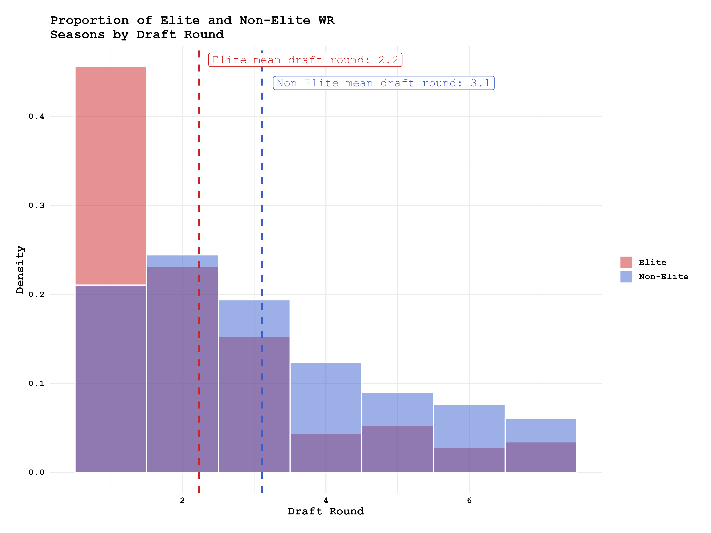
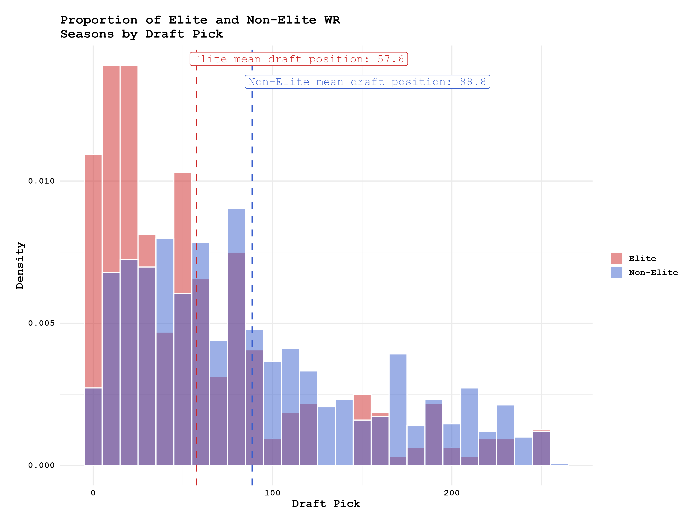
The mean draft round and draft pick of the two groups show much higher difference than the measures of age and experience. Mean elite draft round and pick are 2.2 and 57.6 respectively. Mean non-elite draft round and pick are 3.1 and 88.8. Welch’s T-tests give the following results: draft round) t-statistic = -8.7978, degrees of freedom = 507.15, p-value = 2.2e(-16); draft pick) t-statistic = -8.5347, df = 505.41, p-value = 2.2e(-16). The p-value is extremely significant at the p < 0.5 level for both, the null hypotheses are rejected. It’s also worth noting that the results of the Welch’s T-test for each of these comparisons are almost exactly the same, which makes sense because the distribution of draft picks is just a more granular view of the distribution of draft rounds. Statistically and visually elite receivers are found resoundingly earlier in the draft – maybe general managers know what they’re doing.
From these analyses the statistics that are most important for determining if a WR will have an elite season or not are draft pick and years spent in the NFL. Age has very minimal effect, so will be excluded from any predictive regression model.
Regression Models
We can use this information to build a regression model that can predict when a receiver has the highest chances of an elite season given their years spent in the NFL and draft position. The relationship between elite receivers and draft position is NOT linear, it’s more logarithmic. There’s a massive drop in elite receivers after round 1, then flattens out entirely after round 3 (elite receiver distributions in figures 5 and 6). The relationship between elite WRs and age and years in the league are also not linear, they’re parabolic (figures 3 and 4). For our first model we’ll then use the terms yrs_in_league, yrs_in_league^2, and log(draft_pick). Draft pick we determined is logarithmic, hence using its log in the model, years in the league is correlated to elite production, and we know that the longer a player stays in the league passed their prime they will have lower chances of an elite season. Here’s the summary output of the model:
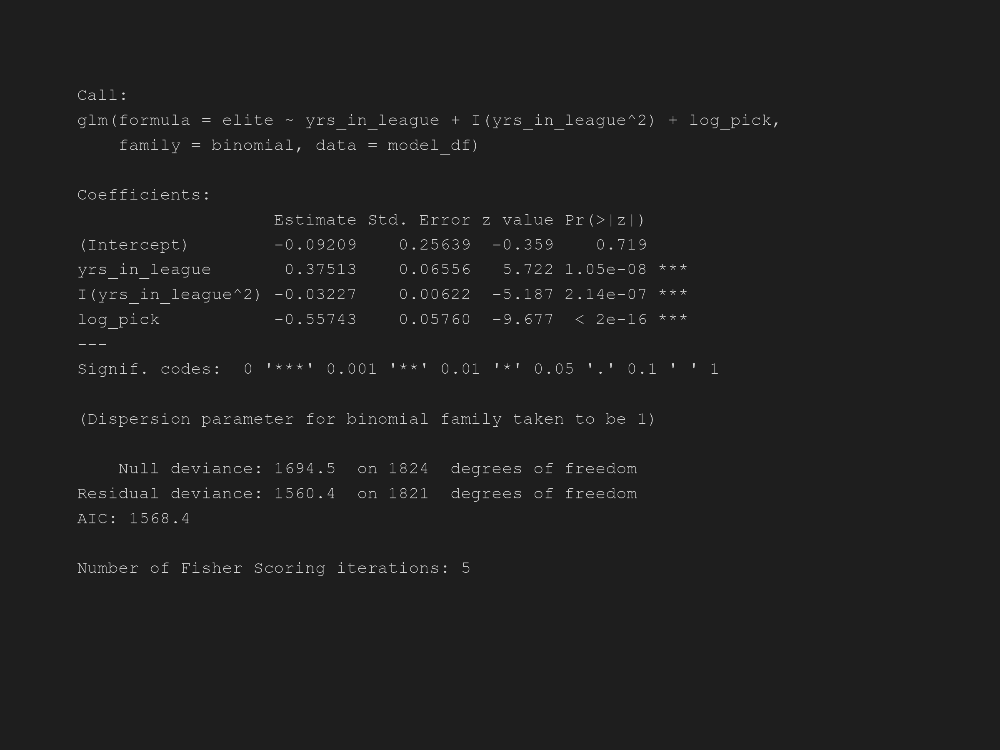
All three predictors have a significant p-value, and their coefficients are what we expect. Years in the league has a positive relationship with elite WR seasons, years in the league squared has a negative relationship, which means elite seasons increase and then drop after reaching a peak (parabolic). Log draft pick also has a negative relationship, which is what we expect from looking at the draft position histograms from earlier. When running a given draft pick through this model for 0-12 years spent in the league, all these relationships are apparent.
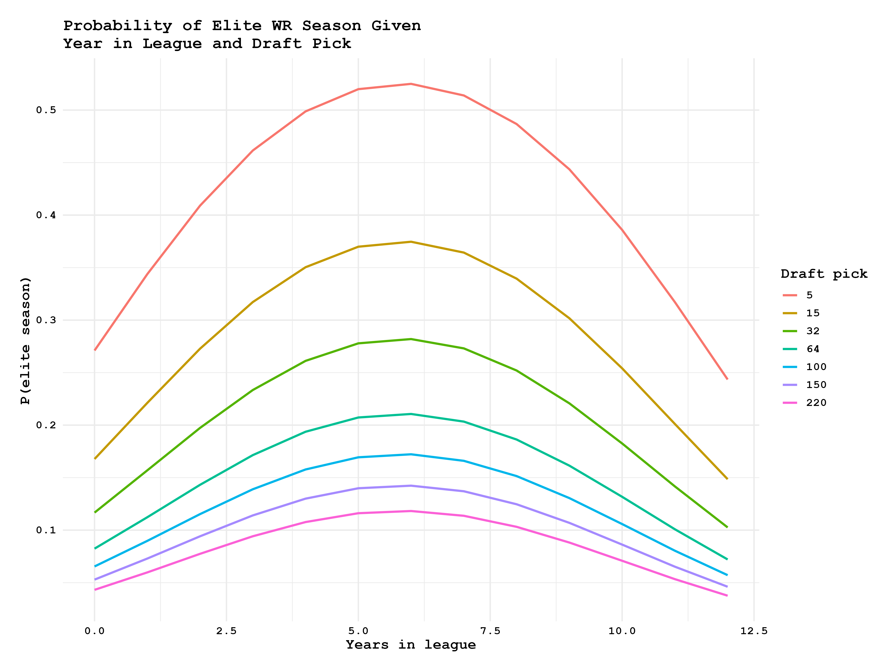
Higher draft picks have the largest odds of having an elite season throughout their careers, which is expected. There’s a big issue with this model shown in its visualization--all draft picks have the highest probability of an elite at the same point in their careers regardless of draft position. This doesn’t happen in reality, higher draft picks will more likely have elite production earlier because if they didn’t they’d get cut or traded long before their 6th season. To improve the model to reflect this we’ll add an interaction between years and pick.
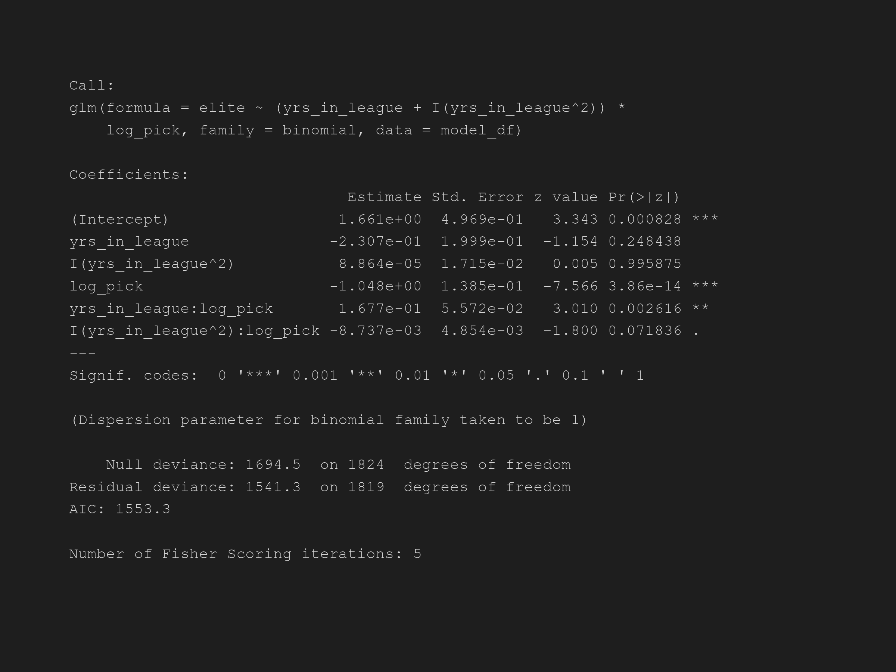
The interaction terms in this new model are also significant, meaning log pick is indeed correlated to years in the league and its square. The new visualization also reflects what’s expected in reality much more than the previous:
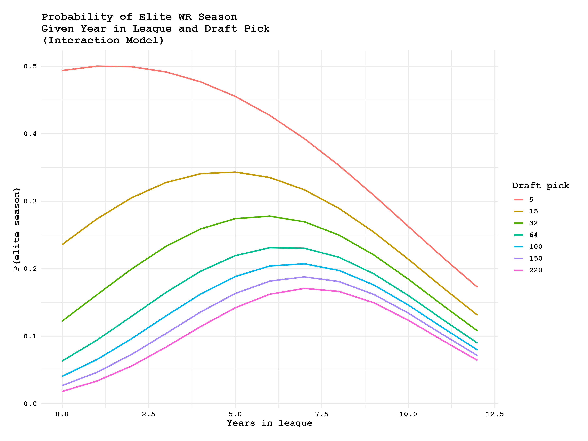
This model looks much more like what we’d expect, earlier draft picks have higher odds of an elite season earlier in their careers and later draft picks have their own highest odds later in their careers—if a late pick is good enough to last 6+ years in the NFL they likely have elite-potential. Both of these models can be visualized further with heatmaps showing odds of an elite season for each of the 262 draft picks over the course of 12 years in the NFL.
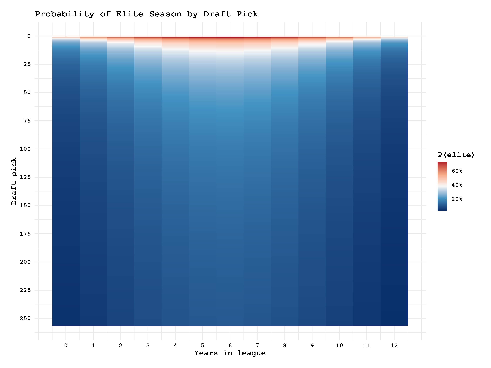
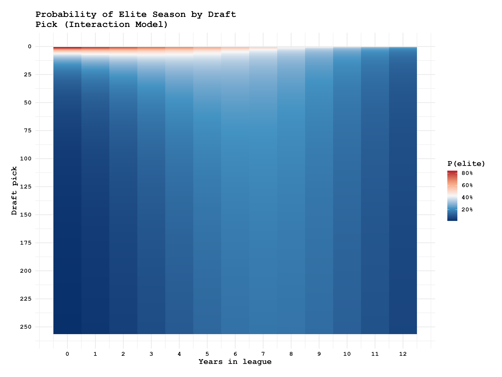
The second model appears to reflect more of what we expect, especially if compared to the raw counts of elite seasons at each draft position and career years.
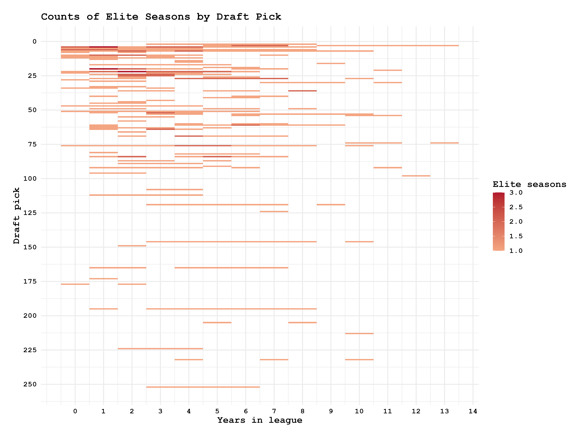
The raw counts of elite seasons by draft pick and career years played show most elite seasons come from early draft picks earlier in their careers. Highest density of elite seasons are in the top left of the heatmap, which is much closer to the odds heatmap produced by the second regression model. Of the two models, the second one is a much better predictor of elite WR seasons if draft position and NFL experience are given as inputs.
Looking closely between the raw counts and the second model’s heatmap they don’t line up exactly. There are plenty of elite seasons that happen for picks 20-50 in the first 5 years of their careers, but the regression model heatmap gives higher odds later in the careers of such draft picks. This shows that the variables we’ve selected as predictors are likely not the best we could have chosen for this. That’s ok. The goal of this analysis was just to determine if there’s a way to find out when a receiver might have an elite season given only age, experience, and draft pick. We were able to determine correlation, and make a rough predictive model, which is more than enough to function as a jumping-off point for further analysis.
Conclusions and Future Work
It turns out general managers and scouts usually know what they’re doing when they trade up in the draft to get a first round receiver who’s billed as a generational talent. They may still end up as a bust or just not live up to their lofty expectations, but that’s ok. The point is that when teams pick players high, those are the players that have the best chances of having huge seasons at some point in their careers.
The final model we produced wasn’t the best it could be, and making a better-fit model would require finding other variables with stronger correlations to elite production and/or career trajectories. Such variables could be colleges/conferences players played in before, skill level of the quarterback they’re playing with (which would also need to be quantified), combine metrics (40-yard dash, shuttle, catching drills, etc.), and many others. Regardless of which other variables might be incorporated into a new model they should be things that are as specific to the individual player as possible to limit noise from confounding variables.
Beyond just WRs, the same methods can be applied to all players. The steps are simple: 1) identify what stat(s) makes a player “elite”, 2) find the variables that correlate strongest with players in the “elite” group vs the players in the “non-elite” group, 3) use the correlated variables to predict likelihood of elite production. That’s all, just three steps. The underlying methods are what are important about this analysis, not the actual results of this specific application. The same logic can be used for predictive modeling outside the context of the NFL or sports in general. As noted, it isn’t the best version of what it could be, but offers a place to start and gives rough results that point the direction toward the most optimal solution.
Notes and Caveats
Undrafted WRs
No undrafted WRs are included in the analysis, even though there are many who go on to have good careers and even seasons that meet the criteria we used for “elite”. I pointed this out at the beginning, and want to reiterate it. The issue is that since they don’t have a draft pick or round they all have to be assigned a dummy variable (like round 8 and/or pick 263). This will end up not making any sense in the rest of the data because then there’re hundreds of picks in the “8th” round and pick “263”. The data ends up extremely skewed and difficult to analyze. They were just kept out of the whole analysis just for the sake of simplicity.
Yards/Game and Catches/Game vs Total Yards and Total Catches
In terms of measuring a WR’s ability, yards/game and catches/game (in a season) are much better metrics than total yards and catches in a season. Players may miss a few games or more due to injury and causing them to miss the 1000 yard and/or 100 catches marks. Their play and ability aren’t what prevent them from getting there, just random circumstances. I arbitrarily chose those two benchmarks because they’re frequently cited across NFL discourse as being significant for a season. Using the corresponding per-game metrics would likely have given a much stronger analysis, but that would have required defining an “elite” value for yards and catches per game, which is open to debate. Once again, for simplicity I chose to stick with the raw totals of each stat in a season as the benchmarks.
Consistent Elite Seasons
Many elite seasons are actually just the same player playing at a high level year after year. If a late round pick happens to be a steal and plays at an elite level for most of their career, they may single-handedly increase the probabilities of later-round picks’ chances of elite production any given season. For example, it may appear that ANY late-round pick has a 20% chance of being elite in their 5th year in the NFL, but that number may be inflated by a single player that strung together 4 elite seasons after getting drafted in the 5th round. This is another area the model can be cleaned up to give a stronger prediction for WR production.